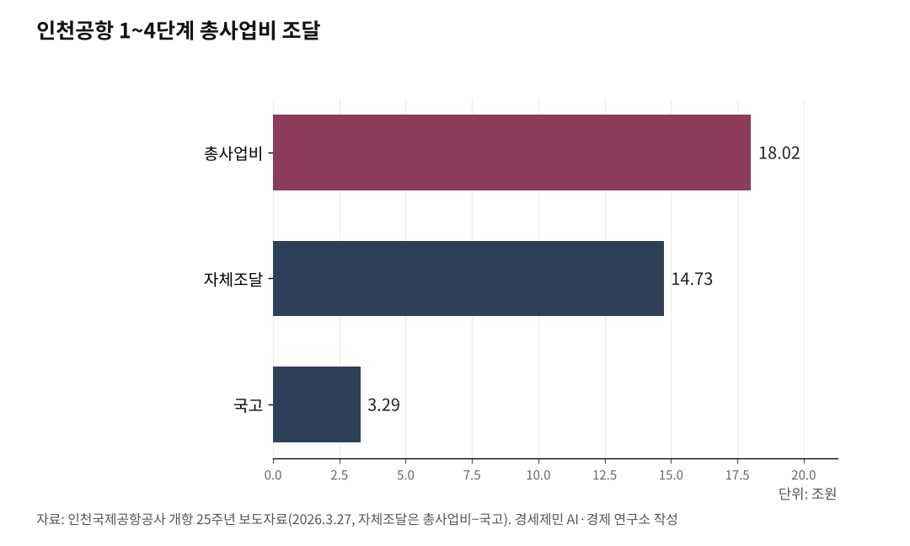

[세계3위 인천공항미래②] 세계 3위에 취하면 골든타임 놓친다
강한 건 곳간과 시설, 약한 건 연결이다, 더 키울 게 아니라 채워야 한다
일본이 환승을 비운 창은 곧 닫힌다, 5단계 삽 뜨기 전에 진단부터 하라
인하대 해양AI융합센터 김갑봉 연구교수
인천국제공항(ICN)이 2025년 세계 3위에 올랐다. 그러나 순위에 취하면 골든타임을 놓친다. 순위는 건강진단서가 아니다. 곳간과 시설, 연결 잠재력은 정상권이지만 정작 그것을 실현하는 환승이 약하다. 인천에 필요한 것은 더 큰 그릇이 아니라 잘 채운 그릇이다.

골든타임인 까닭은 일본에 있다. 도쿄 시장이 두 공항으로 갈리며 환승이 흩어져, 동북아에서 유럽과 미주로 가는 환승에 빈자리가 열렸다. 다만 싱가포르와 두바이가 그릇을 키우는 터라 그 창은 오래 열려 있지 않다. 5단계로 삽을 뜨기 전에 진단부터 해야 하는 이유다. 강점(S)과 약점(W), 기회(O)와 위협(T)으로 안과 밖을 가르고, 그다음 주체·환경·자원·메커니즘(SERM)으로 무엇이 그것들을 굴리는지 본다.
1. 강점, 곳간이 튼튼하다
인천공항은 제 돈으로 컸다. 1~4단계 총사업비 18조170억원 가운데 국고는 3조2874억원으로 18%뿐이고, 나머지 82%를 자체조달했다. 인천국제공항공사 개항 25주년 보도자료(2026.3.27.) 기준이다.
4단계까지 마쳐 처리능력은 연 1억600만명에 이르렀고, 살림도 흑자다. 2025년에도 흑자 기조를 이어갔고, 2007년부터 2024년까지 국가에 돌려준 누적배당이 3조269억원이다.
연결 잠재력도 빠르게 올랐다. 항공정보업체 OAG 메가허브 2025에서 인천은 10년 전 10위에서 네 계단 뛴 세계 6위에 올랐고, 가장 붐비는 날 잠재 연결편이 10년 새 58% 늘었다. 곳간과 시설, 연결 잠재력은 정상권이다.

2. 약점, 연결이 약하다
체력은 강한데 연결이 약하다. 2025년 환승객 804만명을 국제여객 7356만명으로 나누면 약 11%다. 도하 하마드국제공항(DOH) 74%나 두바이국제공항(DXB) 47%는 환승을 전업으로 삼는 모델이라, 관문(O&D) 수요가 두터운 인천과 환승률 절대치를 1대1로 견주기는 어렵다. 다만 OAG 연결 잠재력이 세계 6위인 인천이 그 잠재력만큼 환승을 실현하지 못한다는 사실은 분명하다. 구조가 닮은 비교군은 일본이지만, 나리타·하네다 환승률 절대수치는 공식으로 확인되지 않는다.
시설도 덜 찼다. 처리능력 1억600만명에 총여객 7407만명이니 거친 가동률이 약 70%다(2025년 계산값). 슬롯 첨두시간 기준 정밀 가동률은 따로 따질 몫이다.
땅의 연결은 끊겼다. 인천공항 직결 고속철도(KTX)가 이용 부진으로 2018년 9월 폐지돼, 세계 10위권 허브 가운데 드문 단절을 안고 있다. 국내선도 빈약하다. 인천에서 지방을 잇는 정기 국내선이 사실상 없어, 지방 손님을 환승으로 모으는 길이 좁다.
3. 기회와 위협, 일본이 비우고 거인이 키운다
기회는 일본에서 온다. 같은 OAG 메가허브 2025에서 도쿄 하네다공항(HND)은 전년 3위에서 여섯 계단 떨어진 9위로 내려앉았고, 연결편이 10% 줄었다. 나리타국제공항(NRT)은 저비용항공(LCC) 메가허브 상위권으로 올라서며 저비용 환승에 기울었다. 도쿄 시장이 두 공항으로 갈리며 환승이 흩어져, 동북아에서 유럽과 미주로 가는 환승에 빈자리가 생겼다.
위협은 둘이다. 하나는 거인의 확장이다. 싱가포르 창이공항(SIN)과 두바이 알막툼국제공항(DWC)이 그릇을 키우는 터라, 크기 경쟁으로는 이기기 어렵다.
다른 하나는 집안에서 온다. 통합 대한항공(KE)은 결집의 이점과 함께 독점의 그늘을 안았다. 공정거래위원회는 2025년 12월 대한항공·아시아나가 인천~프랑크푸르트 좌석을 2019년의 69.5%로 줄여 공급 축소 금지를 어겼다며 이행강제금 64억6000만원을 부과했다. 결집의 힘과 독점의 폐해가 한 통합에서 같이 나온다.
4. 작동 구조(SERM), 병목은 주체다
강약을 갈랐으면 그것을 굴리는 톱니를 본다. 주체(S)와 환경(E), 자원(R), 메커니즘(M)이다. 환경은 앞 글에서 본 시장과 정책, 경쟁이고, 자원은 튼튼한 재무와 1억 규모 시설, 슬롯, 배후단지다. 메커니즘은 또렷하다. 항공사를 유치해 환승을 키우고, 두꺼워진 노선이 화물칸을 채우며, 그 물동량이 배후단지 부가가치로 이어진다.
문제는 주체다. 인천공항공사는 2026년 3월 20일부터 김범호 부사장 직무대행 체제이고, 한국공항공사도 사장이 비어 2026년 6월 사장 공모에 들어갔다. 톱니를 돌릴 손이 약하다. 게다가 정부가 인천공항공사와 한국공항공사, 가덕도신공항건설공단 통합을 검토하면서, 통합으로 가면 인천이 적자 지방공항 부담을 떠안고 자율 집행력이 줄 수 있다는 우려가 인천공항공사 노동조합에서 나온다. 반대로 통합이 중복 투자를 줄이고 적자 지방공항을 한 살림으로 떠받쳐 전체 효율을 높인다는 논거도 있다. 어느 길이 활성화에 맞는지는 거버넌스 편에서 따로 따진다.
5. 진단이 가리키는 지렛대는 환승과 주체다
진단은 한 방향으로 모인다. 곳간과 시설, 연결 잠재력은 강한 반면 약한 것은 환승률과 가동률, 땅의 연결이다. 그래서 길은 더 큰 그릇이 아니라 잘 채운 그릇이다.
가장 큰 지렛대는 환승이고, 일본이 비운 자리가 마침 열렸다. 다만 그 지렛대를 당길 손이 주체다. 수장이 비고 통합 논의가 겹친 지금, 집행 속도가 활성화의 병목이다.
한 줄로 줄이면 이렇다. 인천은 그릇이 작아서가 아니라 덜 채우고, 그 채울 손까지 비어 약하다. 그래서 처방의 출발점은 환승과 주체이며, 무엇을 어떻게 채울지는 다음 글부터 하나씩 짚는다.
이 글은 인천공항의 미래를 다루는 연재의 두 번째 글이다.
참고문헌
인천국제공항공사, "인천공항, 2025년 역대 최다 항공운송실적 경신" 보도자료, 2026.1.25.
인천국제공항공사, "인천공항 개항 25주년" 보도자료, 2026.3.27.
항공정보업체 OAG, "메가허브 2025(Megahubs 2025)", 2025.9., https://www.oag.com/megahubs-airports-2025
걸프타임스(Gulf Times), "도하가 세계 최대 환승 허브가 됐다(공항별 환승 비중, OAG 기준)", 2025.9.17., https://www.gulf-times.com/article/710924/business/doha-has-quietly-become-the-worlds-leading-connecting-airport-hub
한국일보, "9월부터 인천공항 KTX 노선 폐지, 지자체들 반발", 2018.7.30., https://www.hankookilbo.com/News/Read/201807301065348619
공정거래위원회, "대한항공·아시아나 공급 좌석수 축소 금지 위반 이행강제금 부과", 2025.12.22., https://www.ftc.go.kr
경기일보, "인사혁신처, 이학재 인천공항 사장 사표 수리, 직무대행 체제 전환", 2026.3.20., https://www.kyeonggi.com/article/20260320580047
파이낸셜뉴스, "한국공항공사, 이번주 사장 공모 돌입, 공사 통합 변수 될까", 2026.6.2., https://www.fnnews.com/news/202606021708260961
한국경제, "인천공항·한국공항公 통폐합 추진", 2026.3.15., https://www.hankyung.com/article/2026031521731
전기신문, "인천공항·한국공항·가덕도 통합 추진, 인천공항 노조 강력 반발", 2026.3.16., https://www.electimes.com/news/articleView.html?idxno=366084